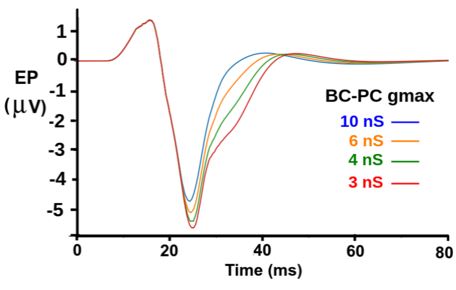

These scripts were used to model a patch of layer 2/3 primary auditory cortex, similar to that used in Kudela, et al. (2018). This single layer model contains a 48 x 48 grid of pyramidal cells (PCs) and a 24 x 24 grid of basket cells (BCs). The reduced PC models have 17 compartments with dimensions and passive properties that were fit to human cortical PC reconstructions (Eyal, et al. 2016). This parallel simulation was used to understand the effects on evoked potentials of inhibition of PCs by BCs. It was desctibed in the CNS 2019 poster and published paper:
Beeman D, Yu A, Crone J (2019) Studying evoked potentials in large cortical networks with PGENESIS 2.4. BMC Neuroscience 2019, 20(Suppl 1):P46 https://bmcneurosci.biomedcentral.com/articles/10.1186/s12868-019-0538-0#Sec281
The default simulation reproduces the results shown in Figure 1 of the paper. (Fig1-abstract.png)

Details of the original (Beeman, 2013) model can be found at http://genesis-sim.org/GENESIS/UGTD2-CNS/Tutorials/networks/ACnet2-GENESIS/ACnet2-docs.html.
These scripts are for PGENESIS 2.4 (May 2019 official release version), available from http://genesis-sim.org/GENESIS. The improvements in this new Parallel GENESIS version have been described by Crone, et al. (2019).
The instructions here are for running the simulations with 'pgenesis' invoked directly on a system with PGENESIS/GENESIS 2.4 installed. Directions for running them through the Neuroscience Gateway Portal are given further below.
The default main script divides the network into 24 horizontal slices that run in parallel on 24 MPI simulation nodes, plus a control_node for console messages and input to the model, and an output_node for file I/O (asc_file and par_asc_file objects).
The fast GENESIS "hsolve" solver is used on each cell to provide highly efficient spike distribution. This requires the use of two new hsolve-compatible GENESIS 2.4 objects. Short term synaptic depression or facilitation is provided with "facdep_rules2", and "efield_cells" properly calculates the field potential from a list of cells, using all transmembrane and capacitive currents.
The main script is 'par-ACnet23-6-4.g'. It should be run with the command:
pgenesis -nox -nodes 26 par-ACnet23-6-4.g
This will step the simulation for 11.1 sec to produce 11 trials, with the 15 msec input pulse at 1 sec intervals, and then exit. It has the default settings "RUNID = 6404" and BC to PC inhibition gmax = 4 nS. It will produce (among others) an output file "Im_field_6404.txt".
A plot of this file will show 11 traces of the simulated field potential, as measured from a point 2 mm above the middle of network row 16. The image RUN_6404_Im.png is from a plot of results from a run of this simulation. The green trace in "Fig1-abstract.png" was produced from an average of these 11 trials over the period from the start of the pulse until 80 msec afterwards.
In order to generate the data shown in the figure for other values of inhibitory gmax, you can add optional parameters for the RUNID and Ex_inh_gmax. For example,
pgenesis -nox -nodes 26 par-ACnet23-6-4.g 6410 10e-9
will generate data for the blue trace in the figure.
Two Python scripts have been included to supplement the collection of analysis tools that are provided with GENESIS in genesis/Scripts/gpython-tools.
gipyplot.py - A general two-dimensional plotting program that can overplot multi-column data from single or multiple files. It also has several command line options, including '-h' for help. It was used to produce the plots used in 'Fig1-abstract.png ' and 'RUN_6404_Im.png'. You can use any other plotting application to plot the simulation results.
LFPtrials-out.py - calculates a trial averaged Local Field Potential from time series data that is organized into 'trials' with an identical stimulus applied during each trial. It takse two arguments:
The 'trial_param_file' contains a header with information about the stimulus parameters. The header should be in the format:
#RUNID stim_delay stim_length trial_interval sample_length
This is followed by lines, with each one containing the trial start time and the stimulus type:
0 = none, 1 = preferred stimulus, 2 = oddball (infrequent) stimulus
A typical file name is in the form 'oddball_freqs_<RUNID>.txt'.
The 'time_data_file' typically contains some measure of Excitatory Post-Synaptic Currents in the network over a run that has multiple trials. This typically contains Local Field Potentials recorded at a distance from a network of cells. The average LFP(t) is calculated by averaging over trials up to, but not including, the final entry in the 'trial_param_file'.
A typical file name is in the form 'Im_field_<RUNID>.txt'.
LFPtrials-out.py outputs the LFP to be plotted for stimulus type 1 (the frequent stimulus) to a file 'LFP-out1_<time_data_file>'. Likewise, it performs the calculation and outputs a file 'LFP-out2_<time_data_file>' if samples exist for stimulus 2. In this simulation, there is no infrequent stimulus.
In order to average the results from RUNID 6404, give the command:
LFPtrials-out.py oddball_freqs_6404.txt Im_field_6404.txt
After doing this for the other runs with 10, 6, and 3 nS inhibitory gmax, you can plot the results shown in Fig1-abstract.png with (on one line):
gipyplot.py LFP-out1_Im_field_6410.txt LFP-out1_Im_field_6406.txt LFP-out1_Im_field_6404.txt LFP-out1_Im_field_6403.txt -t "RUN 6410 (10 nS) 6406 (6 nS) 6404 (4 nS) 6403 {3 nS)"
Use the zoom feature of gipyplot.py, or your favorite plotting application to select the region from 0.1 to 0.18 sec.
The home page for the Neuroscience Gateway Portal is https://www.nsgportal.org/.
Anyone with a need to run neuroscience simulations on one of their high performance supercomputers can apply for a free account by clicking on "Register Account".
Instructions for submitting jobs through the portal can be accessed from the home page from "Support / NSG Tutorial" and clicking on "PDF Tutorial". It may be convenient to download and save the file "HowtousetheNSGportal.pdf" for reference while you go through the steps of creating a folder for a new project and defining tasks.
After you have received an account, login by clicking "Access NSG Portal".
Once you log in, follow the tutorial directions to create a new folder, give it a label and a description. The "input data" that you will be asked to upload in a zip file, which can be this zipped package or your own variation.
Then, from the tasks tab, create a new task and provide the information that is required. Maximum Hours to Run can be a conservative 0.1 hours. This small network typically takes a little over a minute to run.
The Main Input Filename can be par-ACnet23-6-4.g or a variant, with the two optional parameters.
When it is time to select a tool, choose "PGENESIS on Comet (2.4)".
This simulation uses 26 processes (PGENESIS "nodes") to be run on 26 processor cores. Comet has a maximum of 24 cores per node, so the simulation is run on 2 Comet nodes with 13 cores per node. Use these values when setting "Number of Nodes" and " Number of Cores per Node".
After you have clicked "Save and Run Task" you can monitor the progress of your run in the queue in "View Task Output", or wait for the automated email telling you that the task has completed. Then download the output files for analysis.
There are many flags for options and definitions of global variables in the file 'constants3.g' that is included near the beginning of the main script. These are described further below.
Some of the most important simulation parameters can be modified from the defaults in a section of the main script, following the include of 'constants3.g'. This is the place where edits could be made to run the simulation to produce the other three plots in the figure.
/* ============ Customizations for this run ========================= Change these global variables from their default values before setting up the simulation. =================================================================== */
For example:
// Change the RUNID (and output file names) from the default
RUNID = "6406"
Ex_inh_gmax = 6.0e-9 // PC inhibition by BCs
tmax = 11.1 // set an alternate run time
This will generate the data for the orange trace in 'Fig1-abstract.png'.
Some of the more important flags for options and global variables are:
str RUNID = "6404" // default ID string used in output file names
int debug_level = 0 // display additional information during setup
// Use a higher number for more verbosity
int pdebug = 0 // print parallel debugging messages
The simulation will be run using the function 'do_batch':
int batch = 1 // if (batch) run the default simulation without graphics int graphics = 0 // display control panel, graphs, optionally net view
These determine the type of output files to be created. All are possible, but only the field potential plots are created in this simulation.
int netview_output = 0 // Record network output (soma Vm) to a file int EPSC_output = 0 // output Ex_ex EPS currents to file int calc_EPSCsum = 0 // calculate summed excitatory post-synaptic currents int calc_LFP = 1 // calculate summed local field potentials from efield
These determine how many simulation nodes will be used. In thie case, there will be 24 slices of the network, plus two more for input and output.
int n_slices = 24 // each slice will do a horizontal slice of network control_node = 0 // This should be the terminal window graphics_node = 0 // If there is a GUI, put it in this node also output_node = n_slices + 1 // Use a separate node for output to files n_nodes = n_slices + 2
This simulation was originally designed to measure the different responses of the network to a frequent tone and a different infrequent "oddball" tone. For this study on the effects of inhibition, there was no infrequent tone. Although the PS and BC excitatory synapses undergo short term depression, this effect was not studied in the default simulation configuration. This can be modified with the settings below.
str input_paradigm = "oddball" // two inputs // str input1_prob = 0.82 // input 1 has 0.82 probablitiy, input 2 has 0.18 str input1_prob = 1.0 // For this version, use 100% probability for input 1 int use_stim_order = 0
The flag 'use_stim_order' determines the type of sequence to use with input_paradigm = "oddball". If use_stim_order = 0, a random sequence of frequent and infrequent tones will be used, with the probability for input tone 1 to be given by 'input1_prob', typically 0.82. For a repeated single tone only, use input1_prob = 1.0.
use_stim_order = 1 is a variation that uses non-random sequences for the two tones, taken from a file {stim_order_file}.
use_stim_order = 2 produces an initial frequent tone, and then trains of four frequent tones, followed by one infrequent tone.
use_stim_order = 3 produces trains of four frequent tones, followed by two infrequent tones. These are useful for short test runs.
When calculating external field potentials with input1_prob < 1.0, it is necessary to keep track of which input was used for a particular time interval. The simulation outputs a file "oddball_freqs_<RUNID>.txt" with a header line and two columns that list the start time of the trial and the input number 1 or 2. For the default run of this script, oddball_freqs_^404.txt contains only "1" in the second column.
The names of the grids for layer23 cells used here and in the included scripts are Ex_layer23 and Inh_layer23. In order to adapt the scripts to model other cortical layers, these can be changed to use "layer4" or any other layer name by changing the global variable "default_layer".
// This global parameter is used to define layer names, such as
// "/Ex_"@{default_layer} == "Ex_layer4"
str default_layer = "layer23" // could be replaced by "layer4"
par-ACnet23-6-4.g - the main simulation script
par-netfuncs-5.g - defines functions for creating and connecting the network
par-ACnet23_funcs-6.g - defines output and most other functions
par-LFPfuncs.g - functions for measuring field potentials
par-simple_inputs3.g - delivers regular or random pulsed spike trains to the network
pyr_23_asym.p - cell parameter file for PCs
bask.p - cell parameter file for BCs
protodefs3-0.g - creates the prototype compartments and channels
pyrchans3.g - channel definitions for PCs
FSchans.g - channel definitions for fast spiking BCs
Stimulus_order_binary.txt - stimulus order file used in Kudela, et al. (2018)
gipyplot.py - 2D plotting application - requires matplotlib
LFPtrials-out.py - calculates the trial averaged Local Field Potential
Fig1-abstract.png - Figure 1 from Beeman, et al. (2019)
RUN_6404_Im.png - plot of the LFP from a run with default parameters
Beeman D (2013) A modeling study of cortical waves in primary auditory cortex. BMC Neuroscience, 14(Suppl 1):P23 doi:10.1186/1471-2202-14-S1-P23 (http://www.biomedcentral.com/1471-2202/14/S1/P23) (Model available from ModelDB, Accession number: 150678)
Crone JC, Vindiola MM, Yu AB, Boothe DL, Beeman D, Oie KS, Franaszczuk PJ (2019) Enabling Large-Scale Simulations With the GENESIS Neuronal Simulator. Front. Neuroinform. 13:69. doi: 10.3389/fninf.2019.00069 (Model available from ModelDB, Accession number: 260267)
Eyal G, Verhoog MB, Testa-Silva G, Deitcher Y, Lodder JC, Benavides-Piccione R, Morales J, DeFelipe J, de Kock CP, Mansvelder HD, Segev I (2016) Unique membrane properties and enhanced signal processing in human neocortical neurons. Elife 5:e16553. doi:10.7554/eLife.16553 (Model available from ModelDB, Accession number: 195667)
Kudela P, Boatman-Reich D, Beeman D and Anderson WS (2018) Modeling Neural Adaptation in Auditory Cortex. Front. Neural Circuits, 05 September 2018. https://doi.org/10.3389/fncir.2018.00072
{kind=link}